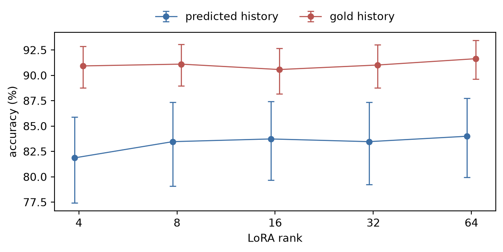
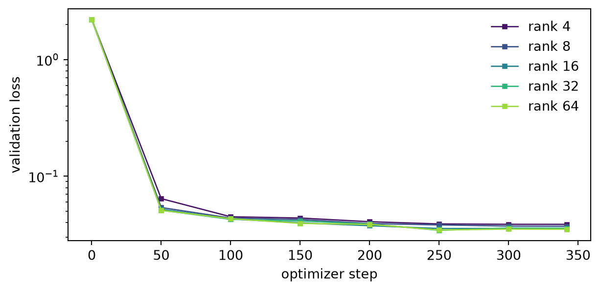

Code
from peft import LoraConfig
default_rank = LoraConfig().r
assert default_rank != 16You will learn:
The book fine-tuned one model, with one adapter, and a few choices were made without testing the alternatives. This chapter runs one experiment on one of them: a rank sweep, the same fine-tuning run at five values of the LoRA rank (Chapter 9), compared on the same validation turns. Afterwards it goes through the other things one could try, and says for each what the earlier chapters already show.
The sweep trains four new adapters, with ranks 4, 8, 32 and 64, and sets them beside the rank-16 adapter of Chapter 12. The rank is the only thing that changes (with alpha, which moves with it so that the scaling stays the same). The data, the learning rate, the number of epochs, the batch size and the seed are those of Chapter 12. The sweep asks three things:
The first two are answered by the accuracy of each adapter on the validation split, in both history modes (Chapter 13), and by its paired difference from the rank-16 adapter. The third is answered by the same analysis of the adapter’s update that Chapter 12 made for rank 16. The training loss of each run is the check that the runs differ only in capacity, and not in how they trained.
The rest of the chapter sets the sweep up. The next sections say why the rank is the thing to vary and what the rank-16 adapter already tells us, then define the runs and the size of each adapter, and then write down what we expect and how we will read the results, before any of them is seen.
from peft import LoraConfig
default_rank = LoraConfig().r
assert default_rank != 16The adapter of Chapter 12 has rank \(r = 16\): each adapted matrix is changed by the product of two thin matrices with 16 directions between them. The rank is the capacity of the update. A task that needs the model to change a lot needs a high rank; one that asks for a small, regular change, such as writing programs in a fixed format, may need very little. We fixed 16 before looking at the task, and nothing in the book has tested it. It is not even the default of the PEFT library, which is 8.
Full fine-tuning, where every direction of every matrix may change, is not run: the highest rank of the sweep is the nearest it gets.
Chapter 12 looked at the update that the rank-16 adapter made, one matrix at a time, and found that it was small compared with the weights and that it was concentrated in a few directions.
import numpy as np
import pandas as pd
from convfinqa.artifacts import get
stats = get("adapter_analysis_main_0").json("stats.json")
sq = np.array([m["singular_values"] for m in stats["matrices"]]) ** 2
share = sq / sq.sum(1, keepdims=True)
cumulative = share.cumsum(1).mean(0)
assert stats["r"] == 16
assert share[:, 0].mean() > 0.4 and cumulative[7] > 0.85The largest direction holds on average 56% of the squared norm of an update, and the largest eight hold 93%. That suggests that a rank below 16 might do. It cannot say more than that. An update made with 16 directions is cut off at 16: if the task could use 64, the rank-16 adapter would show a spread that runs to the last direction, and would not show the directions it did not have. The sweep is the way to find out, and the same analysis of a larger adapter says whether it uses the extra directions.
The ranks are 4, 8, 16, 32 and 64, with 16 in the middle. The rank-16 run is the adapter that every earlier chapter used (main). Each of the others is the same run with the rank changed and alpha set to twice the rank, so that the scaling \(\alpha / r\) that multiplies the update stays at 2 (Chapter 9). They are defined in configs/train.json as rank4, rank8, rank32 and rank64, and each gives the artifacts of Chapter 12 and Chapter 13 with its name in place of main: lora_rank64_0 is the adapter, tuned_val_rank64_0_pred its answers on the validation split. The seed is 0 for all of them.
The number of parameters of an adapter grows in proportion to the rank. For each adapted matrix of shape \(d_\text{out} \times d_\text{in}\) the adapter has \(r (d_\text{in} + d_\text{out})\) parameters, and the model adapts every linear layer of each of its blocks.
from transformers import AutoConfig
MODEL = "Qwen/Qwen3-4B-Instruct-2507"
cfg = AutoConfig.from_pretrained(MODEL)
d, heads, kv, hd = (
cfg.hidden_size, cfg.num_attention_heads, cfg.num_key_value_heads,
cfg.head_dim,
)
# (input size, output size) of the seven adapted matrices of a block
SHAPES = {
"q_proj": (d, heads * hd), "k_proj": (d, kv * hd),
"v_proj": (d, kv * hd), "o_proj": (heads * hd, d),
"gate_proj": (d, cfg.intermediate_size),
"up_proj": (d, cfg.intermediate_size),
"down_proj": (cfg.intermediate_size, d),
}
per_rank = cfg.num_hidden_layers * sum(i + o for i, o in SHAPES.values())
# the adapter that was trained has the size the formula gives
from safetensors import safe_open
with safe_open(
get("lora_main_0").path / "adapter" / "adapter_model.safetensors", "pt"
) as f:
trained = sum(
np.prod(f.get_slice(k).get_shape()) for k in f.keys()
)
assert trained == 16 * per_rank
RANKS = [4, 8, 16, 32, 64]
pd.DataFrame({
"rank": RANKS,
"alpha": [2 * r for r in RANKS],
"trainable parameters": [f"{r * per_rank:,}" for r in RANKS],
}).set_index("rank")| alpha | trainable parameters | |
|---|---|---|
| rank | ||
| 4 | 8 | 8,257,536 |
| 8 | 16 | 16,515,072 |
| 16 | 32 | 33,030,144 |
| 32 | 64 | 66,060,288 |
| 64 | 128 | 132,120,576 |
The adapter of rank 16 has 33,030,144 parameters, which is what the adapter file of main holds; each step in the table doubles it, and at rank 64 it has 132 million.
One seed per rank is what the budget allows, and that limits what the results can say. The comparison of each run with main is a paired difference on the same validation turns (Chapter 13). When its interval excludes zero, that run differs from main on this split. It does not say the rank is the cause: two runs of the same rank with different seeds also differ, by an amount the sweep does not measure. So a small difference, in either direction, will be reported as not shown, and the sweep is read as a curve: whether the accuracy rises, falls or is flat as the rank changes, not whether any one point is better.
The prediction, written before any of these runs: the accuracy is flat from rank 4 to rank 64, with differences that the paired intervals cannot tell from zero. The reasons are that the update at rank 16 is already concentrated in few directions (see “What the first adapter says” above) and that the format of the task is simple. The prediction would fail if the accuracy rose with the rank beyond 16, or fell sharply at the low end (at rank 4 or 8, because the capacity is too small).
Rank 64 is four times the default, and the evidence above gives no reason to expect the task to use more. The sweep stops there unless the accuracy is still rising at rank 64, that is, unless rank 64 differs from main by a paired interval that excludes zero. In that case ranks 128 and 256 are the next runs, and this chapter will say so.
Every number here is for the validation turns, one seed per rank, with the same decoding as Chapter 13: greedy, one attempt, and the history either the gold answers or the model’s own. Each paired difference is from the rank-16 adapter, on the same turns.
#HEAVY
import matplotlib.pyplot as plt
from convfinqa.stats import bootstrap_accuracy, paired_difference
MODES = ["pred", "gold"]
SCORES = {
(4, "pred"): get("scores_tuned_val_rank4_0_pred"),
(4, "gold"): get("scores_tuned_val_rank4_0_gold"),
(8, "pred"): get("scores_tuned_val_rank8_0_pred"),
(8, "gold"): get("scores_tuned_val_rank8_0_gold"),
(16, "pred"): get("scores_tuned_val_main_0_pred"),
(16, "gold"): get("scores_tuned_val_main_0_gold"),
(32, "pred"): get("scores_tuned_val_rank32_0_pred"),
(32, "gold"): get("scores_tuned_val_rank32_0_gold"),
(64, "pred"): get("scores_tuned_val_rank64_0_pred"),
(64, "gold"): get("scores_tuned_val_rank64_0_gold"),
}
rows = {k: list(v.jsonl("scores.jsonl")) for k, v in SCORES.items()}
acc = {k: bootstrap_accuracy(v) for k, v in rows.items()}
diff = {
(r, m): paired_difference(rows[r, m], rows[16, m])
for r in RANKS if r != 16 for m in MODES
}
n_val = len(rows[16, "pred"])
assert all(len(v) == n_val for v in rows.values())
# predicted history: no rank is shown to differ from 16
assert not any(diff[r, "pred"]["excludes_zero"] for r in RANKS if r != 16)
# gold history: only rank 64 is, and it is above 16
assert [
r for r in RANKS if r != 16 and diff[r, "gold"]["excludes_zero"]
] == [64]
assert diff[64, "gold"]["difference"] > 0
# rank 64 has the highest accuracy in both modes
for m in MODES:
assert max(RANKS, key=lambda r: acc[r, m]["accuracy"]) == 64
# with predicted history the accuracy rises from rank 4 to rank 8, is level from
# rank 8 to rank 32, and no step up the ranks falls by as much as a point
pred_acc = [acc[r, "pred"]["accuracy"] for r in RANKS]
assert RANKS == [4, 8, 16, 32, 64]
assert pred_acc[1] > pred_acc[0]
level = pred_acc[1:4]
spread = max(level) - min(level)
assert spread < 0.01
falls = [
(a, b, pred_acc[i] - pred_acc[i + 1])
for i, (a, b) in enumerate(zip(RANKS, RANKS[1:]))
]
fall_from, fall_to, largest_fall = max(falls, key=lambda f: f[2])
assert 0 < largest_fall < 0.01
assert sum(f[2] > 0 for f in falls) == 1 # the text says "the one step down"
# rank 4 is the one furthest from rank 16 with predicted history
assert max(
(r for r in RANKS if r != 16), key=lambda r: abs(diff[r, "pred"]["difference"])
) == 4
pct = lambda x: f"{100 * x:.1f}%"
pts = lambda x: f"{100 * x:+.1f}"
table = {}
for m, label in [("pred", "predicted history"), ("gold", "gold history")]:
for r in RANKS:
a = acc[r, m]
cell = {
"accuracy": pct(a["accuracy"]),
"95% interval": f"[{pct(a['low'])}, {pct(a['high'])}]",
}
if r == 16:
cell["difference from rank 16 (points)"] = "(reference)"
else:
d = diff[r, m]
cell["difference from rank 16 (points)"] = (
f"{pts(d['difference'])} [{pts(d['low'])}, {pts(d['high'])}]"
)
table[(label, r)] = cell
pd.DataFrame(table).T.rename_axis(["history", "rank"])| accuracy | 95% interval | difference from rank 16 (points) | ||
|---|---|---|---|---|
| history | rank | |||
| predicted history | 4 | 81.9% | [77.4%, 85.9%] | -1.9 [-4.1, +0.2] |
| 8 | 83.5% | [79.1%, 87.4%] | -0.3 [-2.6, +1.7] | |
| 16 | 83.7% | [79.7%, 87.4%] | (reference) | |
| 32 | 83.5% | [79.2%, 87.3%] | -0.3 [-2.0, +1.5] | |
| 64 | 84.0% | [80.0%, 87.7%] | +0.3 [-1.4, +1.9] | |
| gold history | 4 | 90.9% | [88.8%, 92.9%] | +0.4 [-0.7, +1.4] |
| 8 | 91.1% | [89.0%, 93.1%] | +0.5 [-0.4, +1.5] | |
| 16 | 90.6% | [88.2%, 92.7%] | (reference) | |
| 32 | 91.0% | [88.8%, 93.0%] | +0.4 [-0.4, +1.4] | |
| 64 | 91.6% | [89.6%, 93.5%] | +1.1 [+0.3, +2.0] |
# Plot the accuracy of each rank, in both history modes.
fig, ax = plt.subplots(figsize=(6.5, 3.4))
for m, label, color, shift in [
("pred", "predicted history", "#3b6ea5", 0.97),
("gold", "gold history", "#b85450", 1.03),
]:
y = np.array([acc[r, m]["accuracy"] for r in RANKS])
lo = np.array([acc[r, m]["low"] for r in RANKS])
hi = np.array([acc[r, m]["high"] for r in RANKS])
ax.errorbar(
[r * shift for r in RANKS], 100 * y,
yerr=[100 * (y - lo), 100 * (hi - y)],
fmt="o-", ms=5, lw=1, capsize=3, color=color, label=label,
)
ax.set_xscale("log", base=2)
ax.set_xticks(RANKS, [str(r) for r in RANKS])
ax.minorticks_off()
ax.set_xlabel("LoRA rank")
ax.set_ylabel("accuracy (%)")
ax.legend(frameon=False, ncol=2, loc="lower center", bbox_to_anchor=(0.5, 1))
fig.tight_layout()
plt.show()
With predicted history, none of the four other ranks differs from rank 16 by an interval that excludes zero. The accuracy goes from 81.9% at rank 4 to 84.0% at rank 64. It does not rise steadily: the one step down, from rank 16 to rank 32, is 0.3 points. The steps are small against their intervals: the largest difference from rank 16, rank 4, is -1.9 points with an interval of -4.1 to +0.2. With gold history, ranks 4, 8 and 32 are within 0.5 points of rank 16 and none is shown to differ. Rank 64 is +1.1 points above it, with an interval of +0.3 to +2.0 that excludes zero. Rank 64 is also the highest point with predicted history, by +0.3 points, which is not shown to differ from rank 16.
That is one interval in eight that excludes zero. If every true difference were zero, eight independent 95% intervals would be expected to exclude it 0.4 times, and the comparisons are not independent (they share the rank-16 run), so the one result is not strong evidence on its own. It is also not nothing: rank 64 is the highest in both modes, and the two modes are two looks at the same adapters on the same turns, not two experiments.
The validation loss is the check that the runs differ in capacity and not in how they trained (Chapter 12 measured it for rank 16).
#HEAVY
LORA = {
4: get("lora_rank4_0"),
8: get("lora_rank8_0"),
16: get("lora_main_0"),
32: get("lora_rank32_0"),
64: get("lora_rank64_0"),
}
history = {}
for r, run in LORA.items():
log = run.json("trainer_state.json")
metrics = run.json("metrics.json")
history[r] = {
"curve": [
(e["step"], e["eval_loss"]) for e in log["log_history"]
if "eval_loss" in e
],
"max_steps": log["max_steps"],
"best_step": metrics["best_step"],
"best": metrics["best_eval_loss"],
"final": metrics["final_eval_loss"],
}
assert len({h["max_steps"] for h in history.values()}) == 1
assert len({h["curve"][0][1] for h in history.values()}) == 1
max_steps = history[16]["max_steps"]
best = [history[r]["best"] for r in RANKS]
# the lowest loss falls as the rank rises to 32 and is no lower at 64
assert best[:4] == sorted(best[:4], reverse=True)
assert best[4] >= best[3]
# ranks 4 and 8 are still improving at the last check; the others reach
# their best earlier and end a little above it
for r in [4, 8]:
assert history[r]["best_step"] == max_steps
for r in [16, 32, 64]:
assert history[r]["best_step"] < max_steps
assert history[r]["final"] > history[r]["best"]
late_rise = max(history[r]["final"] - history[r]["best"] for r in [16, 32, 64])
pd.DataFrame({
r: {
"lowest validation loss": f"{h['best']:.4f}",
"at step": h["best_step"],
"loss at the last check": f"{h['final']:.4f}",
}
for r, h in history.items()
}).T.rename_axis("rank")| lowest validation loss | at step | loss at the last check | |
|---|---|---|---|
| rank | |||
| 4 | 0.0387 | 342 | 0.0387 |
| 8 | 0.0373 | 342 | 0.0373 |
| 16 | 0.0357 | 250 | 0.0358 |
| 32 | 0.0344 | 250 | 0.0358 |
| 64 | 0.0346 | 250 | 0.0352 |
# Plot the validation loss of each rank over the run.
fig, ax = plt.subplots(figsize=(6.5, 3.2))
colors = plt.cm.viridis(np.linspace(0.05, 0.85, len(RANKS)))
for color, r in zip(colors, RANKS):
steps, values = zip(*history[r]["curve"])
ax.plot(steps, values, "s-", ms=3, lw=1, color=color, label=f"rank {r}")
ax.set_xlabel("optimizer step")
ax.set_ylabel("validation loss")
ax.set_yscale("log")
ax.legend(frameon=False)
fig.tight_layout()
plt.show()
All five runs start from the loss of the untuned model, 2.21, and the lowest loss falls as the rank goes up to 32 (0.0387 at rank 4, 0.0344 at rank 32) and is no lower at 64 (0.0346). With predicted history the accuracy over the same range rises from rank 4 to rank 8 and then stays within 0.3 points from rank 8 to rank 32. The two lowest ranks reach their lowest loss at the last check, step 342, so they were still improving when the run ended; the other three reach theirs at step 250 and are slightly above it at the end, by at most 0.0014. The runs have the same schedule, so a lower rank that learns more slowly would be at a disadvantage at a fixed number of steps; we did not run longer to see.
Whether the larger adapters use the directions they are given is what the analysis of Chapter 12 measured for rank 16, now for each rank: the share of each update’s squared norm held by each direction (p), the effective number of directions \(1 / \sum p^2\) (equal to the rank if the directions share the norm evenly, and 1 if one holds it all), and the size of the update relative to the weights it is added to.
#HEAVY
ANALYSIS = {
4: get("adapter_analysis_rank4_0"),
8: get("adapter_analysis_rank8_0"),
16: get("adapter_analysis_main_0"),
32: get("adapter_analysis_rank32_0"),
64: get("adapter_analysis_rank64_0"),
}
spec = {}
for r, node in ANALYSIS.items():
st = node.json("stats.json")
assert st["r"] == r and st["scale"] == 2
sq = np.array([m["singular_values"] for m in st["matrices"]]) ** 2
p = sq / sq.sum(1, keepdims=True)
spec[r] = {
"top": p[:, 0].mean(),
"effective": (1 / (p ** 2).sum(1)).mean(),
"beyond16": p[:, 16:].sum(1).mean() if r > 16 else None,
"relative": np.mean([m["relative_norm"] for m in st["matrices"]]),
}
# the largest direction holds less of the update as the rank grows, the
# effective number of directions grows, but far more slowly than the rank,
# and the update grows relative to the weights
for lo, hi in zip(RANKS, RANKS[1:]):
assert spec[hi]["top"] < spec[lo]["top"]
assert spec[hi]["effective"] > spec[lo]["effective"]
assert spec[hi]["relative"] > spec[lo]["relative"]
growth = spec[64]["effective"] / spec[4]["effective"]
assert growth < 4
assert spec[64]["beyond16"] > 0.05
pd.DataFrame({
r: {
"largest direction": f"{s['top']:.0%}",
"effective number of directions": f"{s['effective']:.1f}",
"update size over weight size": f"{s['relative']:.2%}",
}
for r, s in spec.items()
}).T.rename_axis("rank")| largest direction | effective number of directions | update size over weight size | |
|---|---|---|---|
| rank | |||
| 4 | 72% | 1.9 | 0.50% |
| 8 | 63% | 2.5 | 0.64% |
| 16 | 56% | 3.2 | 0.80% |
| 32 | 49% | 4.2 | 1.10% |
| 64 | 43% | 5.8 | 1.45% |
The adapters use more directions as they get more, but not in proportion. From rank 4 to rank 64 the rank goes up 16-fold and the effective number of directions 3.1-fold, from 1.9 to 5.8. At rank 64 the directions after the sixteenth hold 15% of the squared norm of an update, so the adapter does use the room it is given, and most of its update is still in a few directions. The update also grows relative to the weights, from 0.50% at rank 4 to 1.45% at rank 64: with alpha set to twice the rank, a bigger adapter makes a bigger change, and we have not separated that from the extra directions.
The prediction was that the accuracy is flat from rank 4 to rank 64, with differences that the paired intervals cannot tell from zero. It holds at the low end: rank 4 and rank 8 are not shown to differ from rank 16 in either mode, and the largest drop, rank 4 with predicted history, is -1.9 points, with an interval that includes zero. It does not hold at rank 64 with gold history, where the interval excludes zero.
#HEAVY
fires = [m for m in MODES if diff[64, m]["excludes_zero"]]
assert fires == ["gold"]The stopping rule was to stop at 64 unless rank 64 differs from rank 16 by a paired interval that excludes zero. The rule did not say which history mode, and it is met in one of the two: gold history, not predicted history. Applied as it was written, to either mode, it says to continue, with ranks 128 and 256. We stop at 64 instead, which departs from the rule. The reason is what the sweep can show. The paired intervals of rank 64 against rank 16 are 3.3 points wide with predicted history and 1.7 with gold history, and two doublings of the rank, from 16 to 64, moved the accuracy by +0.3 and +1.1 points. A third doubling would have to add more than the width of an interval to be shown, with one seed.
The result is that nothing is shown to be lost by going down to rank 4 and nothing is shown to be gained by going up to 32, and that rank 64 is the highest point in both modes, with a gain shown in one of them. Whether a still larger rank would help is not answered here.
The sweep is the one new experiment of this chapter. The other ideas that came up while writing the book are not run, for one of two reasons: the results we already have say that they would not help, or they cost more than the project can show a gain for. The first kind is checked below against the validation results; the second is described, with the reason.
#HEAVY
import json
from convfinqa.stats import bootstrap_accuracy, paired_difference
main_pred = get("scores_tuned_val_main_0_pred")
main_scores = list(main_pred.jsonl("scores.jsonl"))
main_sum = main_pred.json("summary.json")
n_val = main_sum["n"]
n_invalid = round(main_sum["invalid_rate"] * n_val)
n_bad_reference = main_sum["by_kind"].get("bad_reference", 0)
# DSL adapter: the numbers it writes, checked against the page (@sec-evaluating-errors)
dsl_checks = [
c for c in get("checks_tuned_val_main_0_pred").jsonl("checks.jsonl")
if c["runs"]
]
dsl_off_page = sum(not c["lit_grounded"] for c in dsl_checks)
assert dsl_off_page == 0
# the fine-tuned model writes almost nothing invalid, and what it does is a bad reference
assert n_invalid <= 1
assert n_bad_reference == n_invalid
# Python adapter against the DSL adapter (@sec-python-numbers)
py_scores = list(
get("scores_python_tuned_val_0_pred").jsonl("scores.jsonl")
)
py_lead = paired_difference(py_scores, main_scores)
assert not py_lead["excludes_zero"]
pts = lambda x: f"{100 * x:+.1f}"Three ideas would add a constraint or a variant that the results show to be unnecessary.
#k references to earlier steps. Of the 1,125 validation turns of the fine-tuned model, 0 are invalid, and 0 of them are a reference to a step that does not exist (Section 15.4). A grammar for references could fix at most those 0 turns.A fourth idea, more training data written by hand or generated, was planned as a chapter of its own and dropped: the chapter used no model, built one example, and could check only its form, so it did not show how such data would be used by the rest of the book.
#HEAVY
vote = list(get("extra_val_main_0_vote_full").jsonl("predictions.jsonl"))
group = vote[0]["generations"]
unanimous = sum(v["agreement"] == 1 for v in vote) / len(vote)
half_width = bootstrap_accuracy(main_scores)
half_width = (half_width["high"] - half_width["low"]) / 2
assert unanimous > 0.8
assert half_width > 0.02A stronger model, untuned or fine-tuned. An untuned stronger model says little about this project, which asks what fine-tuning a small model on the language of the task gains. A fine-tuned larger one is the same experiment at another size, and a project of its own, with its own cost.
Page images in place of text, with a vision-language model, and LoRA on its language layers only. The data gives each page as extracted text and a table, and the reports they come from are not part of it; we did not find where to get them. There is nothing to give such a model.
Reinforcement learning with the executor as the reward. The execution of a program already gives a reward that needs no judge: 1 if the answer matches, 0 if not. Group Relative Policy Optimization (GRPO) (Shao et al. 2024) samples a group of programs per prompt, scores each, and moves the model towards the ones that score above the average of their group. Liu et al. (2025) trained a 7B model this way, starting from a model that had been fine-tuned on examples, and report on ConvFinQA a score of 81.0 for the model before and 85.0 after, on their own sample of questions and prompts, so the numbers are not comparable with ours. Three things argue against running it here, and the first two can be read from the book.
First, the signal. The samples of a group that agree on the answer get the same reward, and a group with a single reward has no program that scores above the others. In the self-consistency run of Chapter 13, 5 samples per turn agreed on the answer for 91% of the validation turns. A group of eight, which is what TRL uses by default, has more room to disagree, but most of the turns would still give little. Second, the size of a gain. The accuracy of the fine-tuned model on this split has an interval of about ±3.9 points, so a gain of one or two points is small beside it. A paired comparison is tighter than that, but one seed adds a variation that is not measured (see “What is decided before the results” above). Third, the cost: each prompt needs a full-length sequence for each member of the group, generated during training. The idea is left for a project with more data, more seeds and more budget.
Training on the model’s own predicted history, which would remove the gap between training and use that Chapter 13 measures, and fine-tuning on reasoning traces, which needs a teacher model to write them. The first needs generation inside the training loop, like the reinforcement learning above, and the second needs a model that we do not have.